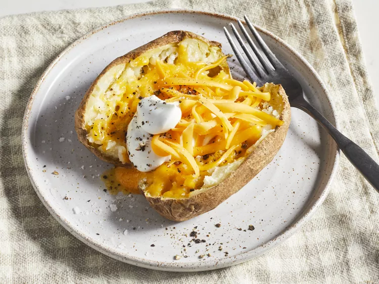

Microwave Baked Potato

Recipe source: https://www.allrecipes.com/recipe/85337/microwave-baked-potato/
Description
You put da potato in da microwave.
Ingredients
- 1 large russet potato
- salt and ground black pepper to taste
- 1 tablespoon butter
- 2 tablespoons shredded Cheddar cheese
- 1 tablespoon sour cream
Steps
- Gather all ingredients.
- Scrub potato and prick with a fork. Place on a microwave-safe plate.
- Microwave on full power for 5 minutes. Turn potato over, and microwave until soft, about 5 more minutes.
- Remove potato from the microwave, and cut in half lengthwise. Season with salt and pepper and mash up the inside a little with a fork.
- Add butter and Cheddar cheese. Microwave until melted, about 1 more minute.
- Top with sour cream, and serve.